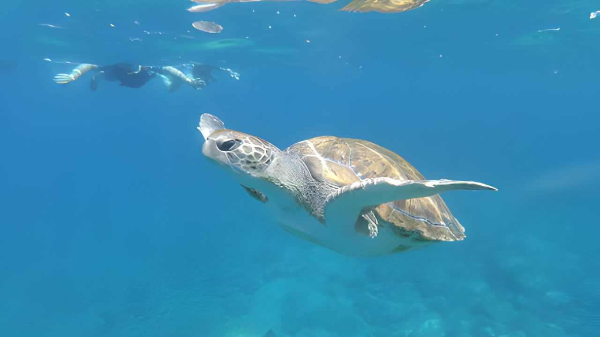
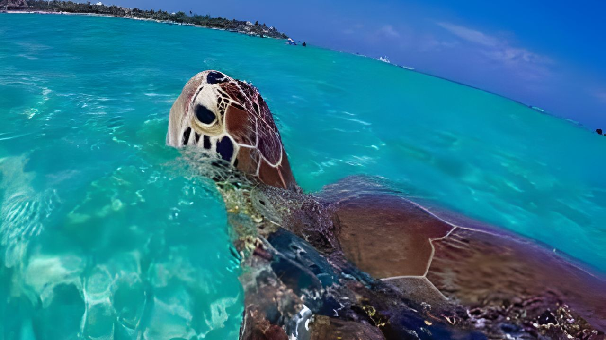
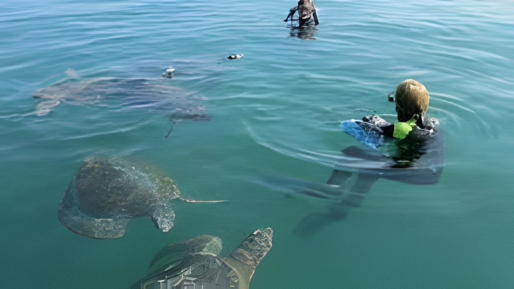

Snorkel con Tortugas



El Ñuro, un pequeño pueblo pesquero en el norte de Perú, es el hogar de un programa de conservación de tortugas marinas de EcOceánica.
¡Practica snorkel con prósperas tortugas marinas en las aguas protegidas de El Ñuro!
Detalle
Ecoceánica es una organización peruana sin fines de lucro dedicada a la conservación marina. Sus esfuerzos han aumentado significativamente la población de tortugas marinas (Perú es hogar de 5 de las 7 especies del mundo), siendo El Ñuro uno de sus mayores éxitos. Los pescadores locales, alentados por EcOceánica, han acordado dejar de capturar tortugas. Ahora, la pesca incidental se arroja a las tortugas, ayudando a impulsar su población y animándolas a reunirse cerca de los muelles, donde se encuentra parte del mejor snorkel.
Incluye:
- Recojo de tu hotel en Máncora, Los Órganos o Punta Sal
- Transporte privado
- Tarifas de entrada al muelle
- Guía profesional de habla inglesa/hispana
No Incluye:
- Extras y propinas.